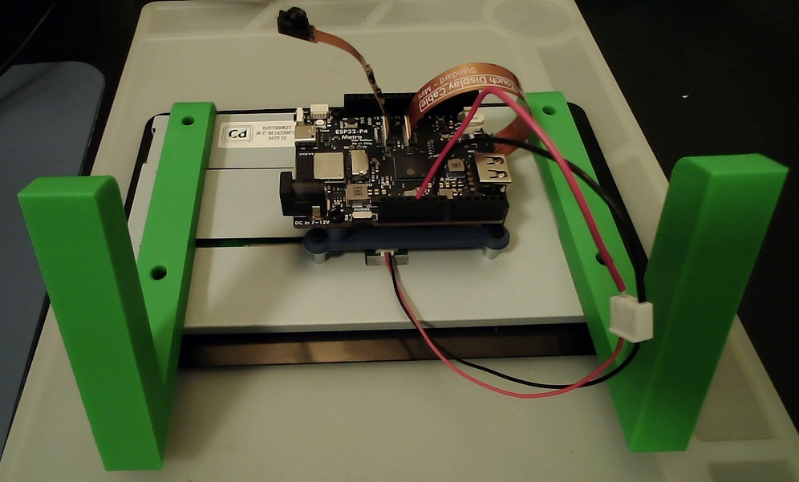

Metro ESP32-P4 to Touch Display 2 (7") adapter
Adapter for mounting an Adafruit Metro ESP32-P4 on a Raspberry Pi Touch Display 2 (7"). The stand in the photo is Jeff Geerling's Touch Display 2 stand.

Adapter for mounting an Adafruit Metro ESP32-P4 on a Raspberry Pi Touch Display 2 (7"). The stand in the photo is Jeff Geerling's Touch Display 2 stand.
